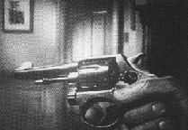
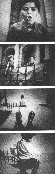

|
Hitchcock, la légende du suspense |
|

|
Spellbound est certainement l'un des films les plus "psy" d'Alfred Hitchcock. Le scénario, à la fois simple et prenant est tiré d'un roman de Francis Beeding. Le Docteur Constance Petersen jeune psychiatre (Ingrid Bergman) arrive dans un établissement psychiatrique dirigée par le Docteur Murchison (Leo G. Caroll). Ce dernier est sur le point de partir à la retraite et doit être remplaçé par un jeune et brilliant psychiatre, le Docteur Edwardes (Gregory Peck). Une fois en poste, le Docteur Edwardes a un comportement bizarre au point que les autres médecins doute de la véritable identité du nouveau directeur. Constance Petersen, qui est tombée amoureuse du beau jeune homme, découvre qu'il est en fait amnésique et prétend avoir tué le véritable Docteur Edwardes. La police découvre en effet que le vrai Docteur Edwardes a été abattu et se prépare à arrêter le nouveau directeur (de son vrai nom John Ballantine) qui pour leur échapper s'enfuit à New-York. Avec l'aide d'un des ses anciens professeur, Constance découvre que Ballantine n'est pas l'assassin d'Edwardes mais qu'il est devenu amnésique après un accident pendant la guerre, il est en plus traumatisé par l'accident mortel survenu à son frère pendant son enfance et dont il est le responsable. Le véritable assassin d'Edwardes n'est autre que le Docteur Murchison, jaloux de la réussite de son jeune confrère. Le film se termine sur le suicide de Murchison... Tourné pendant un période trouble (juste à la fin de la guerre), Spellbound est une grande réussite tant au niveau de l'intrigue, de la recherche cinématographique ou du jeu des acteurs. Les scènes des rêves de John Ballantine furent réalisées sous la direction de Salvador Dali et sont tout simplement fabuleuses : Bien sûr, c'est mieux en vidéo D'autres effets sont particulièrement réussi comme la scène de la main géante montrant l'énorme révolver du Docteur Murchison menaçant Constance Petersen : 

La scène de l'accident du frère de John Ballantine (qui dévale une ranpe
d'escalier avant de s'empaler sur une grille) est aussi particulièrement
impressionnante !
© 1995-2023, Pierre Ficheux
|
 La maison du Docteur Edwardes
La maison du Docteur Edwardes